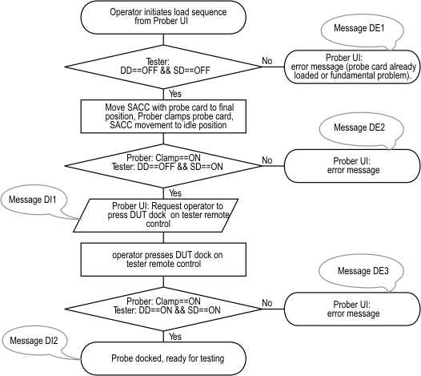
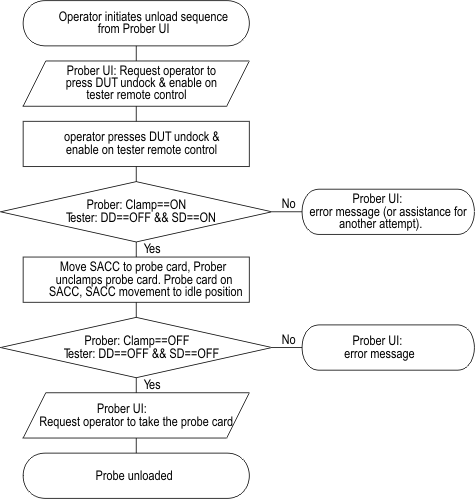

Sequence specifications for Direct-Probe DUT docking
The semi automated card changer (SACC) requires interaction between test head, wafer prober and operator.
- The prober feeds the probe card to the test head.
- The operator uses the remote control for the manually docking procedure.
- The beeper board provides status information via the prober interface.
The tester software does not provide status information.
Probe card load sequence

The beeper board provides locking mechanisms to prevent damages and some basic information that are indicated by LEDs or by the beeper.
The SACC should provide instructions and error messages to guide the operator.
The according messages are as follows:
DI0: Press HARD DOCK button on tester remote control. DI1: Press DUT DOCK and then press NEUTRAL on tester remote control. DI2: Probe card is successfully docked on tester, system is ready for testing. DE1: Check condition of prober, test head and cabling. DE2: Probe card is not detected by tester. Check test head and probe card. DE3: Probe card is not docked on tester. Check condition of test head.
Probe card unload sequence

The according messages are as follows:
RI1: Press DUT UNDOCK and ENABLE button on tester remote control. RI2: Probe card is successfully unloaded. RE1: Probe card is not successfully undocked from tester. Check condition of test head. RE2: Probe card is still detected by tester. Check condition of prober/SACC.
Functional changes
- Introduced in SmarTest 6.5.4